#install.packages('remotes')
##remotes::install_github("satijalab/seurat", "seurat5", quiet = TRUE)
##remotes::install_github("satijalab/seurat-data", "seurat5", quiet = TRUE)
##remotes::install_github("satijalab/azimuth", "seurat5", quiet = TRUE)
##remotes::install_github("satijalab/seurat-wrappers", "seurat5", quiet = TRUE)
##remotes::install_github("stuart-lab/signac", "seurat5", quiet = TRUE)
##remotes::install_github("bnprks/BPCells", quiet = TRUE)
#install.packages('Seurat')
#install.packages('devtools')
#devtools::install_github('satijalab/seurat-data')
#install.packages("ggplot2")
#install.packages("patchwork")
#install.packages("dplyr")
#install.packages("tidyr")Seurat_spatialvignette
Introduction to Visium Data in R using Seurat
BCBB Workshop for NIH Researchers, Nov 2024
We will be using the packages Seurat and ggplot2 for visualization. Example data comes from SeuratData package. Tutorial follows Seurat official vignette but adds additional code, demo of count data and explanations.
SETUP: Ideally, Run Before Class (to install packages, load libraries, and download data ahead of time)
In red is setup that you can run prior to the tutorial to make sure you have the R packages and data ahead of time to make sure the tutorial runs most smoothly.
Note that some commands may have a comment mark # that you will need to remove in order to run them.
Install the packages:
remotes and devtools are useful tools for installing packages
Seurat (required) and Seurat Data (only necessary for the tutorial)
You will also need ggplot for plotting and dplyr, tidyr for data analysis
We will need the following libraries:
library(Seurat)
library(SeuratData)
library(ggplot2)
library(patchwork)
library(dplyr)
library(tidyr)Download the mouse brain Visium dataset ahead of time
#InstallData("stxBrain")Later, for running RCTD, you will also need the spacexr R package and a mouse cortex reference. Note that I had issues downloading until I took myself off NIH VPN (try that if it doesn’t work for you on VPN).
#if (!requireNamespace("spacexr", quietly = TRUE)) {
# devtools::install_github("dmcable/spacexr", build_vignettes = FALSE)
#}
#### OR
#remotes::install_github("dmcable/RCTD")
library(spacexr)Download mouse cortex reference here. This reference scRNAseq dataset has been reduced to 200,000 cells (and rare cell types fewer than 25 cells have been removed).
We will be running a bunch of calculations which will be sped up with the glmGampoi and Rfast2 packages, so let’s install and load them as well:
#BiocManager::install('glmGamPoi')
### fits Gamma-Poisson (aka Negative Binomial) Generalized Linear Models
### substantially improves speed for the SCTransform algorithm
library(glmGamPoi)
#install.packages("Rfast2")
### substantially improves speed for FindSpatialVariableFeatures
library(Rfast2)Now you should now be ready to run the rest of the tutorial fairly quickly!
Useful Resources for Seurat
Useful resources for understanding the Seurat object class and methods:
Seurat wiki: https://github.com/satijalab/seurat/wiki
Essential Seurat commands: https://satijalab.org/seurat/articles/essential_commands.html
Every Seurat object consists as a collection of Assay objects and DimReduc objects.
Each Seurat object has slots:
| Slot | Function |
|---|---|
assays |
A list of assays within this object |
meta.data |
Cell-level meta data |
active.assay |
Name of active, or default, assay |
active.ident |
Identity classes for the current object |
graphs |
A list of nearest neighbor graphs |
reductions |
A list of DimReduc objects |
project.name |
User-defined project name (optional) |
tools |
Empty list. Tool developers can store any internal data from their methods here |
misc |
Empty slot. User can store additional information here |
version |
Seurat version used when creating the object |
You can also check the list of methods available for Seurat objects like so:
utils::methods(class = 'Seurat') [1] [ [[
[3] [[<- $
[5] $<- AddMetaData
[7] as.CellDataSet as.SingleCellExperiment
[9] Assays CastAssay
[11] Cells colMeans
[13] colSums Command
[15] DefaultAssay DefaultAssay<-
[17] DefaultFOV DefaultFOV<-
[19] dim dimnames
[21] dimnames<- droplevels
[23] Embeddings Features
[25] FetchData FindClusters
[27] FindMarkers FindNeighbors
[29] FindSpatiallyVariableFeatures FindVariableFeatures
[31] FoldChange GetAssay
[33] GetAssayData GetImage
[35] GetTissueCoordinates head
[37] HVFInfo Idents
[39] Idents<- initialize
[41] JoinLayers Key
[43] Keys LayerData
[45] LayerData<- Layers
[47] levels levels<-
[49] LeverageScore Loadings
[51] merge Misc
[53] Misc<- names
[55] NormalizeData Project
[57] Project<- ProjectCellEmbeddings
[59] ProjectUMAP PseudobulkExpression
[61] RenameCells RenameIdents
[63] ReorderIdent rowMeans
[65] rowSums RunCCA
[67] RunGraphLaplacian RunICA
[69] RunLDA RunPCA
[71] RunSLSI RunSPCA
[73] RunTSNE RunUMAP
[75] ScaleData ScoreJackStraw
[77] SCTransform SCTResults
[79] SetAssayData SetIdent
[81] show SpatiallyVariableFeatures
[83] split StashIdent
[85] Stdev subset
[87] SVFInfo tail
[89] Tool Tool<-
[91] VariableFeatures VariableFeatures<-
[93] Version WhichCells
see '?methods' for accessing help and source codeLoad Visium Data
Let’s load some stxBrain Visium data from the SeuratData package
This data consists of a single anterior slice named anterior1
?stxBrain
#InstallData("stxBrain")
brain <- LoadData("stxBrain", type = "anterior1")
brain@assays$Spatial
Assay (v5) data with 31053 features for 2696 cells
First 10 features:
Xkr4, Gm1992, Gm37381, Rp1, Sox17, Gm37323, Mrpl15, Lypla1, Gm37988,
Tcea1
Layers:
counts #Cells(brain)
#Features(brain)
#brain$nCount_Spatial ### numbers of UMIs per spot
#brain$nFeature_Spatial ### number of features detected per spotWe are using a convenient package here that includes pre-loaded data, but for a typical Visium experiment we would use the following command
Load10x_Spatial(dir=“/data/dir/”, filename = "filtered_feature_bc_matrix.h5", assay = "Spatial", slice = "slice1")For additional help to load custom 10X Visium data into a Seurat object, see https://satijalab.org/seurat/reference/load10x_spatial
This 10X Visium data consists of:
A spot by gene expression matrix
An image of the tissue slice (obtained from H&E staining during data acquisition)
Scaling factors that relate the original high resolution image to the lower resolution image used here for visualization.
In this Seurat object containing 10X Visium STx data the spot by gene expression matrix contains spot level, not single-cell level data. The “images” slot of the Seurat object contains the image of the tissue as well spatial information needed to associate spot with spatial coordinates in the tissue image.
nrow(brain) # the number of features / genes[1] 31053ncol(brain) # the number of samples / cells / spots[1] 2696glimpse() is as a handy way to quickly look at an object in R (gives the hierarchy/data structure):
glimpse(brain)Formal class 'Seurat' [package "SeuratObject"] with 13 slots
..@ assays :List of 1
.. ..$ Spatial:Formal class 'Assay5' [package "SeuratObject"] with 8 slots
..@ meta.data :'data.frame': 2696 obs. of 5 variables:
.. ..$ orig.ident : Factor w/ 1 level "anterior1": 1 1 1 1 1 1 1 1 1 1 ...
.. ..$ nCount_Spatial : num [1:2696] 13069 37448 28475 39718 33392 ...
.. ..$ nFeature_Spatial: int [1:2696] 4242 7860 6332 7957 7791 6291 7487 7043 4876 8985 ...
.. ..$ slice : num [1:2696] 1 1 1 1 1 1 1 1 1 1 ...
.. ..$ region : chr [1:2696] "anterior" "anterior" "anterior" "anterior" ...
..@ active.assay: chr "Spatial"
..@ active.ident: Factor w/ 1 level "anterior1": 1 1 1 1 1 1 1 1 1 1 ...
.. ..- attr(*, "names")= chr [1:2696] "AAACAAGTATCTCCCA-1" "AAACACCAATAACTGC-1" "AAACAGAGCGACTCCT-1" "AAACAGCTTTCAGAAG-1" ...
..@ graphs : list()
..@ neighbors : list()
..@ reductions : list()
..@ images :List of 1
.. ..$ anterior1:Formal class 'VisiumV2' [package "Seurat"] with 6 slots
..@ project.name: chr "anterior1"
..@ misc : list()
..@ version :Classes 'package_version', 'numeric_version' hidden list of 1
.. ..$ : int [1:3] 5 0 2
..@ commands : list()
..@ tools : list()Seurat object metadata
Metadata is stored as a data.frame, where each row is a sample (e.g. cell or spot) and each column correspond to one sample-level metadata field.
Accessed via [[ extract operator, the meta.data object, or the $ sigil ($ extracts one single column at a time). Row names in the metadata need to match the column names of the counts matrix.
head(brain@meta.data) orig.ident nCount_Spatial nFeature_Spatial slice region
AAACAAGTATCTCCCA-1 anterior1 13069 4242 1 anterior
AAACACCAATAACTGC-1 anterior1 37448 7860 1 anterior
AAACAGAGCGACTCCT-1 anterior1 28475 6332 1 anterior
AAACAGCTTTCAGAAG-1 anterior1 39718 7957 1 anterior
AAACAGGGTCTATATT-1 anterior1 33392 7791 1 anterior
AAACATGGTGAGAGGA-1 anterior1 20955 6291 1 anteriorHere we can look at the distribution of transcripts detected per spot and spatially across the sample image:
brainCount_Spatial_VlnPlot <- VlnPlot(brain, features = "nCount_Spatial", pt.size = 0.1) + NoLegend()
brain_SpatialFeaturePlot <- SpatialFeaturePlot(brain, features = "nCount_Spatial", images="anterior1") + theme(legend.position = "right")
wrap_plots(brainCount_Spatial_VlnPlot, brain_SpatialFeaturePlot)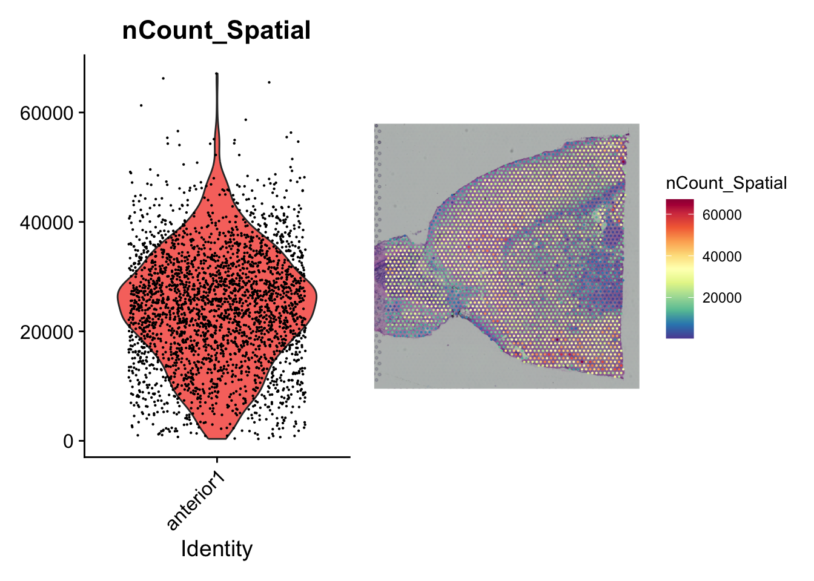
Exploring what we mean by Overdispersion of Count Data
nCount_Spatial <- brain@meta.data$nCount_Spatial
# Create a data frame for plotting
nCount_Spatialdf <- data.frame(nCount_Spatial = nCount_Spatial)
# Plot histogram to visualize overdispersion
ggplot(nCount_Spatialdf, aes(x = nCount_Spatial)) +
geom_histogram(binwidth = 100, fill = "blue", color = "black", alpha = 0.7) +
labs(title = "Histogram of nCount_Spatial",
x = "nCount_Spatial",
y = "Frequency") +
theme_minimal()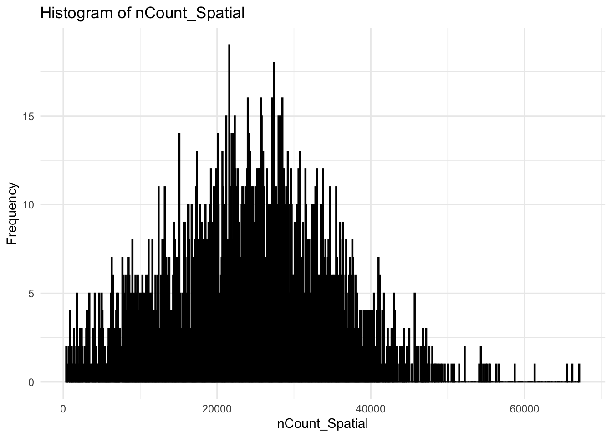
Compare to Poisson Distribution of the same mean
#install.packages("MASS")
library(MASS)
#class(nCount_Spatial)
lambda <- mean(nCount_Spatialdf$nCount_Spatial)
nCount_Spatial_rPoisson<-rpois(n = length(nCount_Spatialdf$nCount_Spatial), lambda)
nCount_df <- data.frame(nCount_Spatial1 = nCount_Spatial, nCount_SpatialPoisson = nCount_Spatial_rPoisson)
ggplot() +
geom_histogram(data = nCount_df, aes(x = nCount_Spatial, fill = "nCount_Spatial"), binwidth = 200, alpha = 0.5, position = 'identity') +
geom_histogram(data = nCount_df, aes(x = nCount_SpatialPoisson, fill = "nCount_SpatialPoisson"), binwidth = 200, alpha = 0.5, position = 'identity') +
scale_fill_manual(name = "Legend", values = c("nCount_Spatial" = "blue", "nCount_SpatialPoisson" = "red")) +
labs(title = "Overlayed Histogram of nCount_Spatial and nCount_SpatialPoisson", x = "Value", y = "Count") + theme_minimal()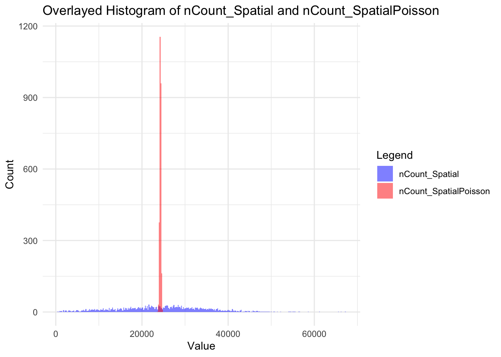
The Poisson distribution (equivalent to normal distribution at high n) is really not appropriate for modeling count data! The observed count data has much higher variance.
ggplot() +
geom_histogram(data = nCount_df, aes(x = nCount_SpatialPoisson, fill = "nCount_SpatialPoisson"), binwidth = 10, alpha = 0.5, position = 'identity') +
scale_fill_manual(name = "Legend", values = c("nCount_SpatialPoisson" = "red")) + labs(title = "Histogram of nCount_SpatialPoisson", x = "Value", y = "Count") + theme_minimal()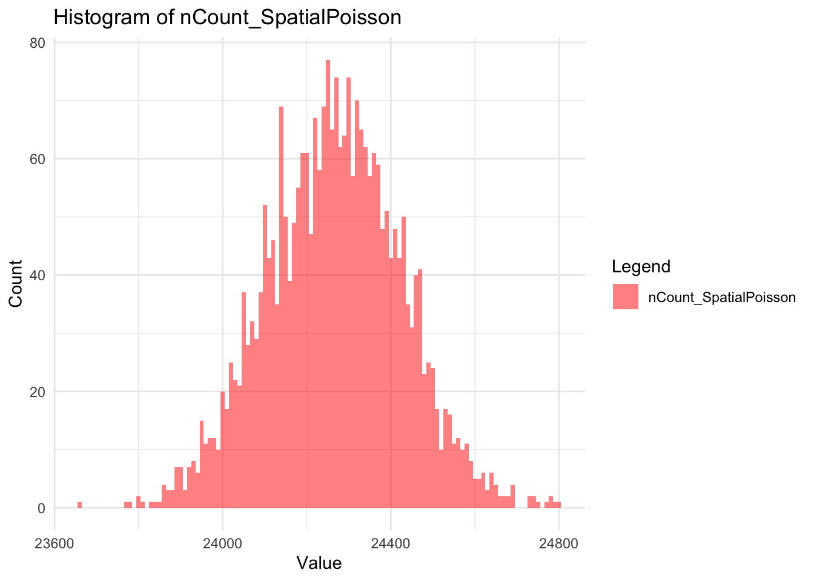
ggplot() +
geom_histogram(data = nCount_df, aes(x = nCount_Spatial, fill = "nCount_Spatial"),
binwidth = 200, alpha = 0.5, position = 'identity') +
scale_fill_manual(name = "Legend", values = c("nCount_Spatial" = "blue")) +
labs(title = "Histogram of nCount_Spatial",
x = "Value",
y = "Count") +
theme_minimal()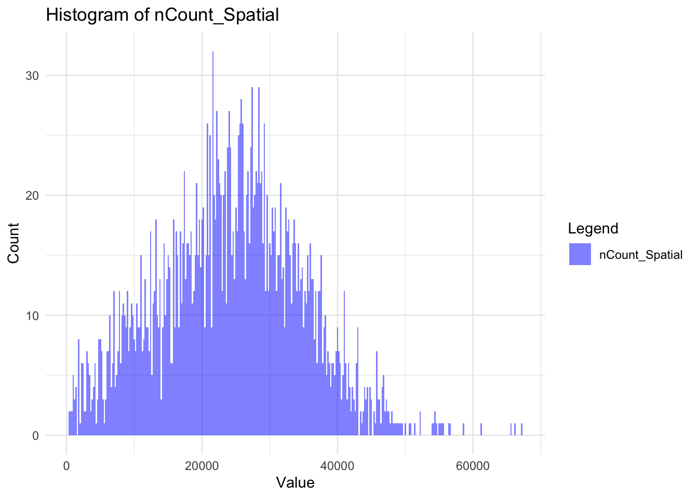
Compare to Negative Binomial Distribution with same mean and dispersion
mu_count <- mean(nCount_Spatialdf$nCount_Spatial)
variance_count <- var(nCount_Spatialdf$nCount_Spatial)
if (variance_count > mu_count) {
# Estimate the dispersion parameter (size)
size_count <- mu_count^2 / (variance_count - mu_count)
print(paste("Estimated dispersion parameter (size):", size_count))
} else {
stop("Variance must be greater than the mean to estimate size.")
}[1] "Estimated dispersion parameter (size): 5.27982237238857"nCount_Spatial_rNB<-rnbinom(n = length(nCount_Spatialdf$nCount_Spatial), size=size_count, mu=mu_count)
nCount_df <- data.frame(nCount_Spatial1 = nCount_Spatial, nCount_SpatialPoisson = nCount_Spatial_rPoisson, nCountSpatialNB=nCount_Spatial_rNB)ggplot() +
geom_histogram(data = nCount_df, aes(x = nCount_Spatial, fill = "nCount_Spatial"), binwidth = 1000, alpha = 0.5, position = 'identity') +
geom_histogram(data = nCount_df, aes(x = nCountSpatialNB, fill = "nCountSpatialNB"), binwidth = 1000, alpha = 0.5, position = 'identity') +
scale_fill_manual(name = "Legend", values = c("nCount_Spatial" = "blue", "nCountSpatialNB" = "red")) +
labs(title = "Overlayed Histogram of nCount_Spatial and nCountSpatialNB", x = "Value", y = "Count") + theme_minimal()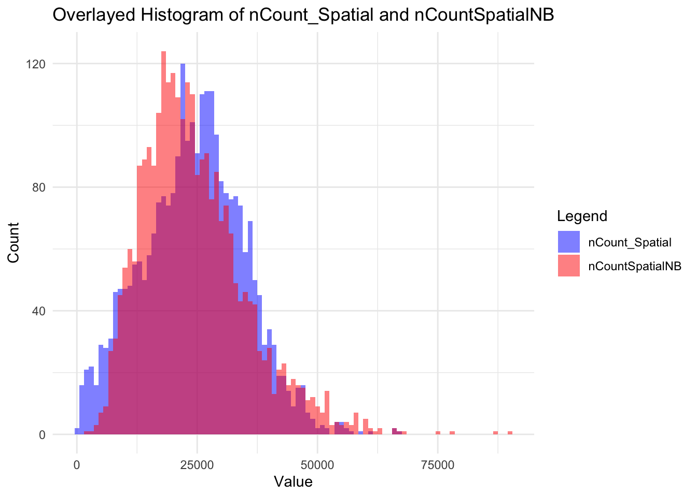
Checking the variance of our count data vs. the fitted NB model
sd(nCount_df$nCount_Spatial1)[1] 10563.2sd(nCount_df$nCountSpatialNB)[1] 10789.6The fitted NB only slightly underestimates the variance (sd=var^2) in the count data! Our count data has a lot of variance, which is why we will perform a normalization with SCTransform to try to remove some of the excess variance.
Visualize mitochondrial contamination and filter it out
brain[["percent.mt"]] <-PercentageFeatureSet(object = brain, pattern = "^MT-|^mt-")
summary(brain[["percent.mt"]]) percent.mt
Min. : 3.652
1st Qu.:11.309
Median :13.543
Mean :14.016
3rd Qu.:15.883
Max. :35.102 plot_mt <- VlnPlot(brain, features = "percent.mt", pt.size = 0.1) + NoLegend()
plot_mt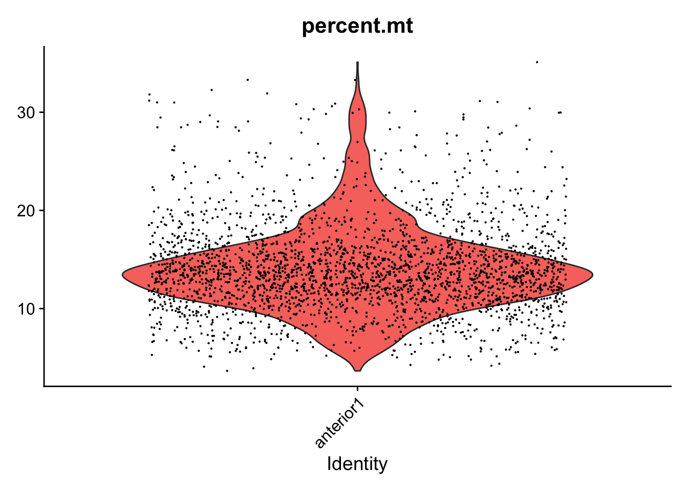
On a histogram, we can see this more clearly:
brain@meta.data %>% ggplot(mapping=aes(x=percent.mt)) +
geom_histogram(bins=50) +
theme_minimal()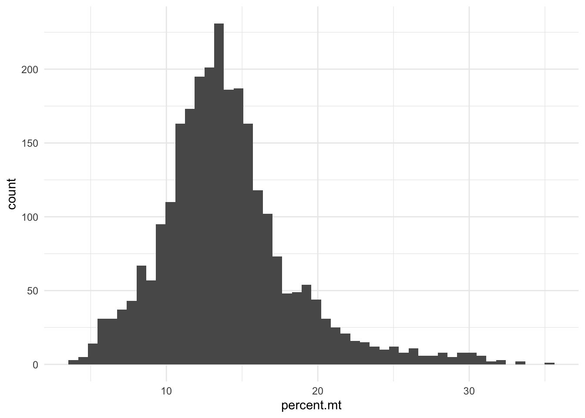
brain@meta.data %>% ggplot(mapping=aes(x=percent.mt)) +
geom_histogram(bins=50, aes(y = after_stat(density)), colour = "black",fill = "grey") +
geom_density(alpha = 0.5, adjust = 1.0, fill = "#A0CBE8", colour = "#4E79A7") +
theme_minimal()
Here’s our Count Data after filtering out Mitochondrial Genes using Seurat’s subset() function
?subsetHelp on topic 'subset' was found in the following packages:
Package Library
S4Vectors /Users/homc/Library/R/arm64/4.4/library
base /Library/Frameworks/R.framework/Resources/library
data.table /Users/homc/Library/R/arm64/4.4/library
BiocGenerics /Users/homc/Library/R/arm64/4.4/library
SeuratObject /Users/homc/Library/R/arm64/4.4/library
Using the first match ...brain_mtfilt<-subset(x = brain, subset = percent.mt < 28)
#plot1 <- VlnPlot(brain, features = "nCount_Spatial", pt.size = 0.1) + NoLegend()
#plot2 <- SpatialFeaturePlot(brain, features = "nCount_Spatial") + theme(legend.position = "right")
#wrap_plots(plot1, plot2)Normalize Count Data with scTransform
Here, we are plotting the library size (molecular counts) across the data and the tissue. We can see there are tissue regions where counts are reduced, coinciding with areas of cortical white matter where neurons are scarce. Where one might normally use LogNormalize() function in Seurat to force each data point to have a standard/median size after normalization, this can introduce problems.
Instead, we will use scTransform, which uses regularized negative binomial model for gene expression to account for technical variation while preserving biological variation. ScTransform functions by normalizing data and detecting high variance features and stores this data in the SCT assay.
We can use it with this data, specifying “Spatial” as the assay to perform the transformation on:
#BiocManager::install('glmGamPoi')
### fits Gamma-Poisson (aka Negative Binomial) Generalized Linear Models
### substantially improves speed for the SCTransform algorithm
library(glmGamPoi)
brain_mtfilt <- SCTransform(brain_mtfilt, assay = "Spatial", verbose = TRUE)
brain <- SCTransform(brain, assay = "Spatial", vars.to.regress = "percent.mt", verbose = TRUE)brain_mtfiltAn object of class Seurat
48708 features across 2653 samples within 2 assays
Active assay: SCT (17655 features, 3000 variable features)
3 layers present: counts, data, scale.data
1 other assay present: Spatial
1 spatial field of view present: anterior1Spatial Feature Plot can be used to show the spatial expression pattern of a given feature/gene
The SpatialFeaturePlot function in Seurat extends FeaturePlot, and can overlay molecular data on top of tissue histology.
SpatialFeaturePlot(brain_mtfilt, features = c("Hpca", "Ttr"))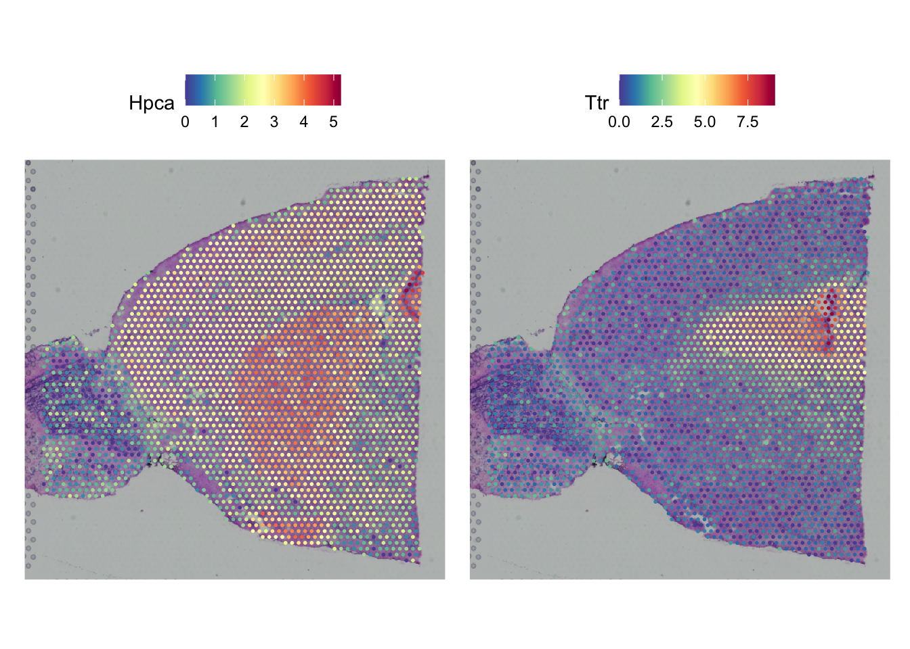
Seurat’s default parameters emphasize the molecular visualization of the data, but we can adjust the plotting parameters to allow for better visualization of histology. The following parameters can be adjusted:
pt.size.factor- This will scale the size of the spots. Default is 1.6alpha- minimum and maximum transparency. Default is c(1, 1).- try setting to
alphac(0.1, 1), to downweight the transparency of points with lower expression
- try setting to
p1 <- SpatialFeaturePlot(brain_mtfilt, features = "Ttr", pt.size.factor = 2)
p2 <- SpatialFeaturePlot(brain_mtfilt, features = "Ttr", alpha = c(0.1, 1))
p1 + p2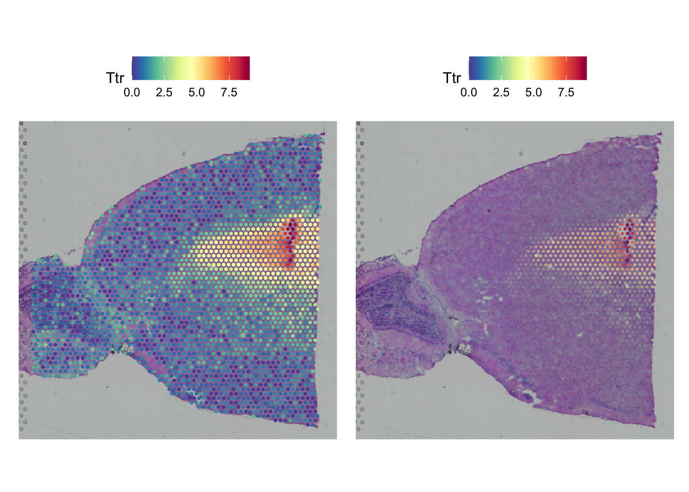
ImageFeaturePlot(brain_mtfilt, features="Ttr", size=2)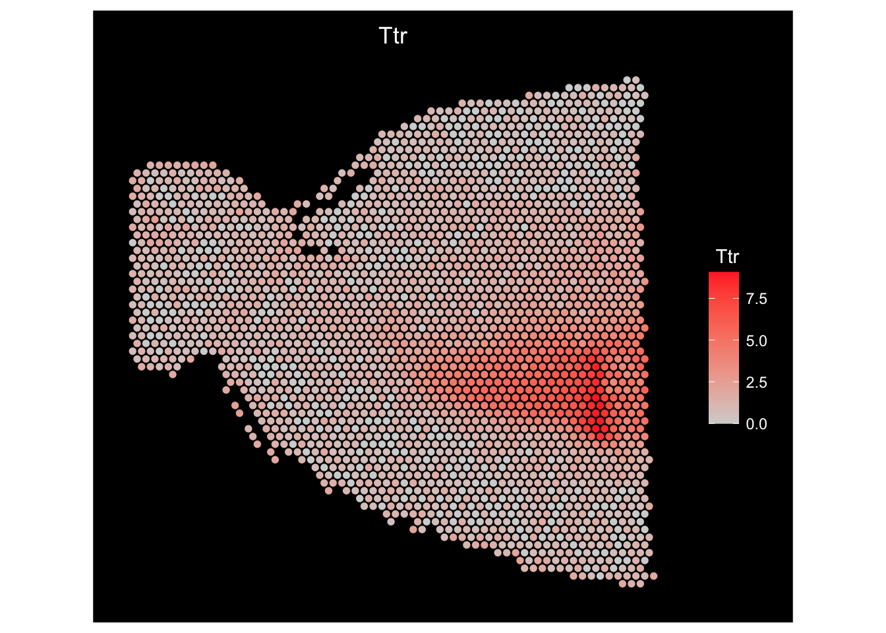
Dimension Reduction with PCA, Clustering and Visualize Clusters with UMAP
We can then perform dimension reduction with PCA, run k-NN clustering and further visualize with UMAP
brain_mtfilt <- RunPCA(brain_mtfilt, assay = "SCT", verbose = TRUE)
brain_mtfilt <- FindNeighbors(brain_mtfilt, reduction = "pca", dims = 1:30)
brain_mtfilt <- FindClusters(brain_mtfilt, verbose = FALSE)
brain_mtfilt <- RunUMAP(brain_mtfilt, reduction = "pca", dims = 1:30)
Reductions(brain_mtfilt)[1] "pca" "umap"The PCA analysis resulted in 5 principal components and 14 clusters
summary(brain_mtfilt$seurat_clusters) 0 1 2 3 4 5 6 7 8 9 10 11 12 13 14
428 299 257 231 221 208 194 154 154 143 132 130 48 30 24 We can plot the PCA graph along PC1 and PC2 and also show the location of the identified clusters. Note: The use of “label” labels each cluster.
p1 <- DimPlot(brain_mtfilt, reduction = "pca", label = TRUE)
p2 <- SpatialDimPlot(brain_mtfilt, label = TRUE, label.size = 3, pt.size.factor = 2.5)
p1 + p2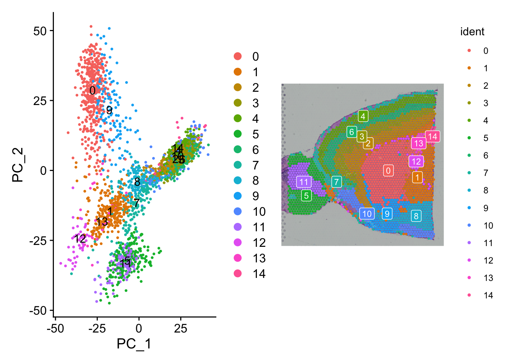
Then we can visualize clusters via UMAP embedding to show the relative distance between clusters on a 2-dimensional embedding
p1 <- DimPlot(brain_mtfilt, reduction = "umap", label = TRUE)
p2 <- SpatialDimPlot(brain_mtfilt, label = TRUE, label.size = 3, pt.size.factor = 2)
p1 + p2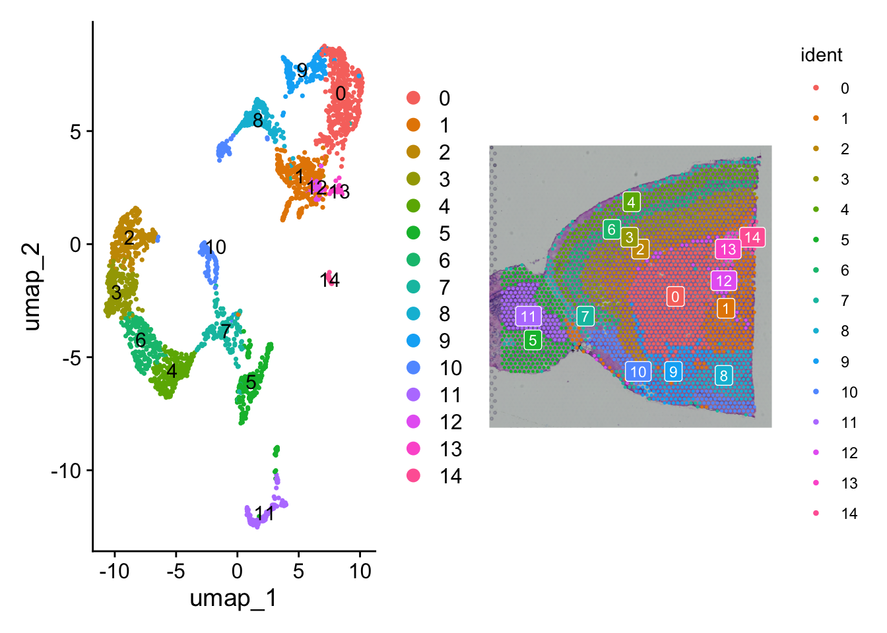
Save Point 1
It’s always useful to save your Seurat objects as RDS objects for loading again later
saveRDS(brain_mtfilt, file = "brain_mtfilt_sctransform.rds")
#brain_mtfilt <- readRDS("brain_mtfilt_sctransform.rds")Use SpatialDimPlot and ImageDimPlot to examine clusters
SpatialDimPlot will show the cluster labels and you can also use ggplot to easily add the X-Y coordinates to the image. You could use Crop() to manually crop the coordinates (we won’t here).
SpatialDimPlot(brain_mtfilt, label = TRUE, label.size = 3, pt.size.factor = 2) + theme_minimal() +
theme(panel.grid.major = element_line(color = "grey80", linewidth = 0.5), # Major grid lines
panel.grid.minor = element_line(color = "grey90", linewidth = 0.25)) # Minor grid lines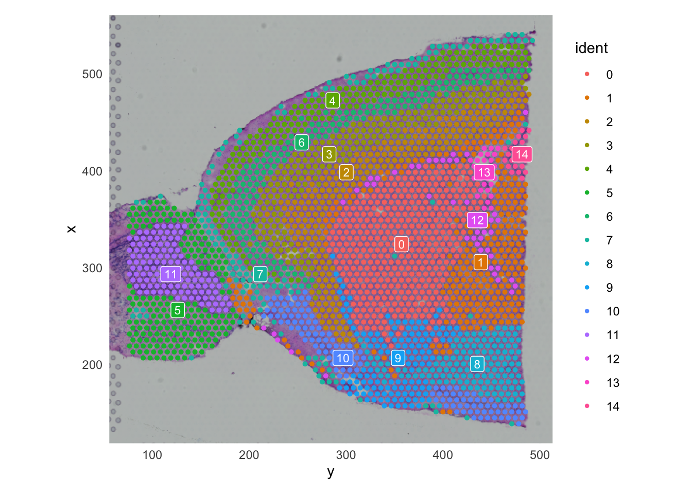
ImageDimPlot can also be similarly used, but on a spatial map (not overlaid over the image):
ImageDimPlot (brain_mtfilt, size=2)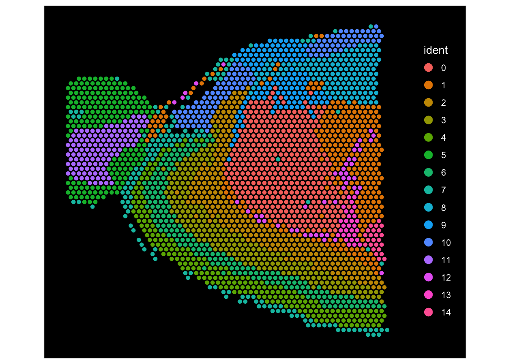
SpatialDimPlot and SpatialFeaturePlot both have an interactive option
#SpatialDimPlot(brain_mtfilt, label = TRUE, label.size = 3, pt.size.factor = 3, interactive=TRUE)
#SpatialFeaturePlot(brain_mtfilt, features = "Ttr", alpha = c(0.1, 1), interactive=TRUE)Another useful interactive feature, LinkedDimPlot links the UMAP representation to the tissue image representation! If you select a cluster in the UMAP plot the corresponding spots in the image will be highlighted.
#LinkedDimPlot(brain_mtfilt)The function cells.highlight within SpatialDimPlot can be used to mark a particular cell of interest. This will plot each cluster’s spatial distribution one by one. Here we have clusters 1,2, 3, 4, 5 and 8
SpatialDimPlot(brain_mtfilt, cells.highlight = CellsByIdentities(object = brain_mtfilt, idents = c(1, 2, 3, 4, 5, 8)), facet.highlight = TRUE, ncol = 3, pt.size.factor = 2)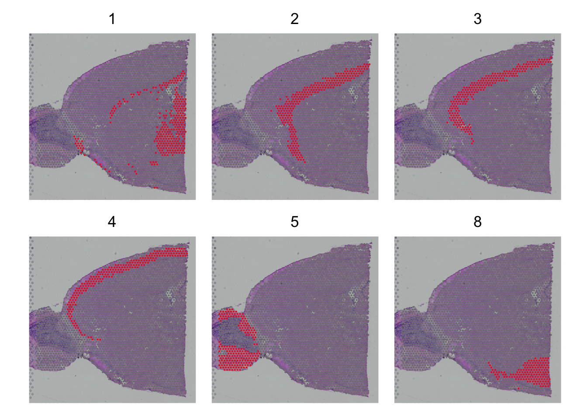
Here are the SCTransformed Counts (UMI) for each Cluster on a Violin Plot
plot1 <- VlnPlot(brain_mtfilt, features = "nCount_SCT", pt.size = 0.1) + NoLegend()
plot1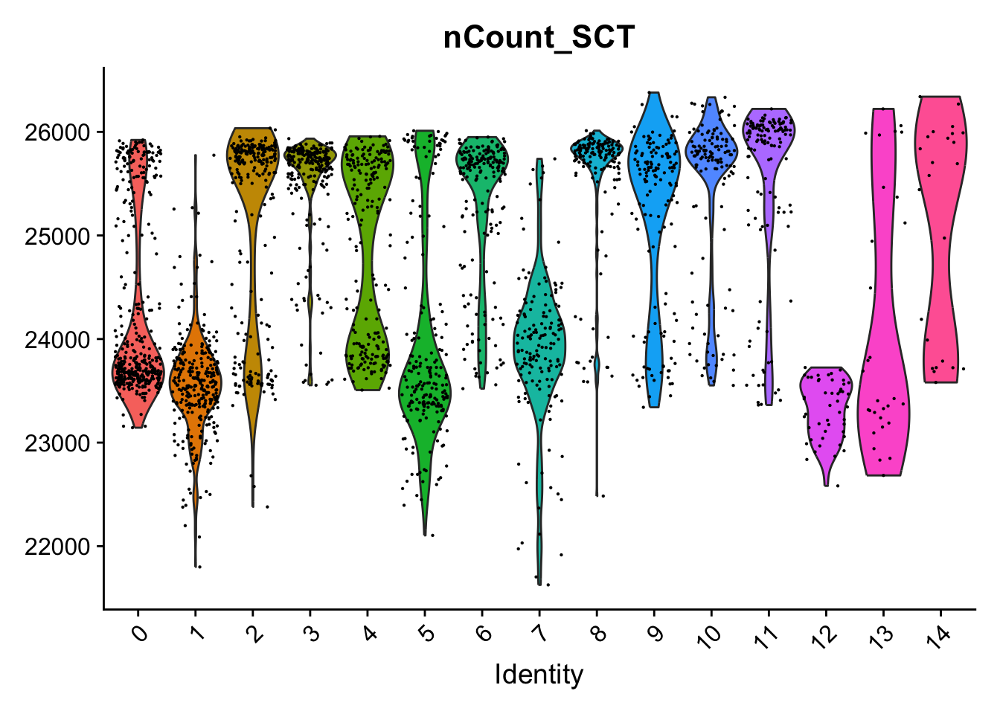
Find DE Marker Genes for Clusters
We can identify differentially expressed genes between two groups of cells using a Wilcoxon Rank Sum test with the FindMarkers function. Because the clusters that were found have good spatial restriction, this is one way of finding genes marking spatially distinct regions.
Here we look at DE genes between cluster 2 and cluster 5
#devtools::install_github('immunogenomics/presto')
### presto will allow a much faster implementation of the Wilcoxon Rank Sum Test
library(presto)
de_markers_2_5 <- FindMarkers(brain_mtfilt, ident.1 = 2, ident.2 = 5)
SpatialFeaturePlot(object = brain_mtfilt, features = rownames(de_markers_2_5)[1:3], alpha = c(0.1, 1), ncol = 3, pt.size.factor = 2.5)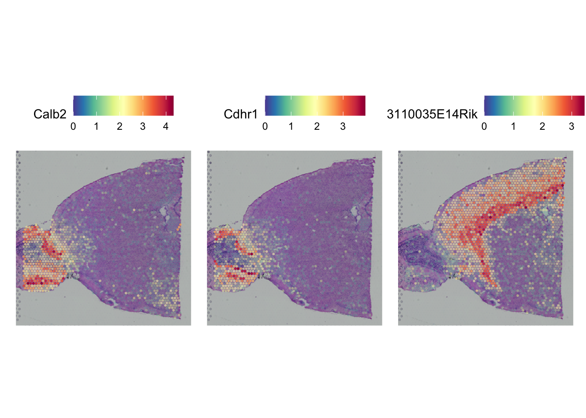
de_markers_2_5_p0.01 <- de_markers_2_5 %>% filter(p_val < 0.01)
SpatialFeaturePlot(object = brain_mtfilt, features = rownames(de_markers_2_5_p0.01)[1:6], alpha = c(0.1, 1), ncol = 3, pt.size.factor = 2.5)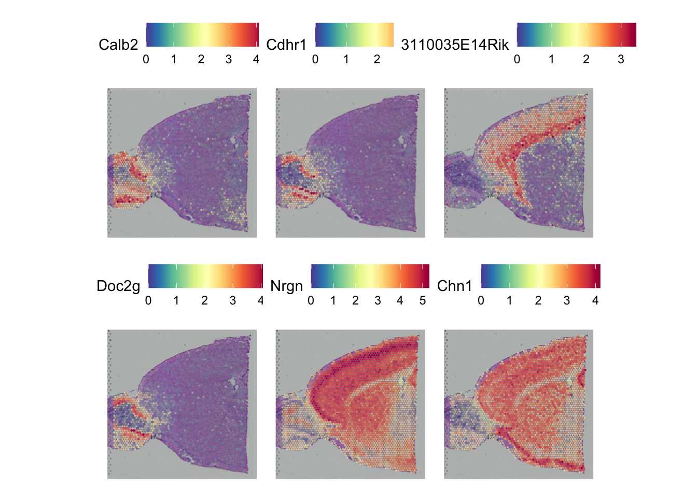
Spatially Variable Genes/Features using Moran’s I
A more direct way to find spatially variable genes is using FindSpatiallyVariableFeatures() . It identifies features exhibiting spatial patterning in the absence of pre-annotation. The default method (method=markvariogram) is inspired by the Trendsceek package, which takes STx data as a mark point process and computes a variogram to ID genes based on expression in spatial location. But we can also specify it to use Moran’s I:
#install.packages("Rfast2")
library(Rfast2)
brain_mtfilt <- FindSpatiallyVariableFeatures(brain_mtfilt, assay = "SCT", features = VariableFeatures(brain_mtfilt)[1:1000], selection.method = "moransi")#rownames(brain_mtfilt$SCT)
#brain_mtfilt$SCT
#names(brain_mtfilt)
#head(brain_mtfilt$SCT@meta.features)moransi_output_df <- brain_mtfilt@assays$SCT@meta.features %>%
na.exclude
head(moransi_output_df[order(moransi_output_df$MoransI_observed, decreasing = T), ]) MoransI_observed MoransI_p.value moransi.spatially.variable
Calb2 0.6785197 0.0009756098 TRUE
Gng4 0.6585290 0.0009756098 TRUE
Ttr 0.6213368 0.0009756098 TRUE
Nrgn 0.6171936 0.0009756098 TRUE
S100a5 0.6142008 0.0009756098 TRUE
Doc2g 0.6089830 0.0009756098 TRUE
moransi.spatially.variable.rank
Calb2 1
Gng4 2
Ttr 3
Nrgn 4
S100a5 5
Doc2g 6See for reference (https://github.com/satijalab/seurat/issues/7729)
top.clusters <- rownames(brain_mtfilt$SCT@meta.features)[which(brain_mtfilt$SCT@meta.features$moransi.spatially.variable.rank < 6)]
SpatialFeaturePlot(brain_mtfilt, features = top.clusters, ncol = 3, alpha = c(0.1, 1), pt.size.factor = 2.5)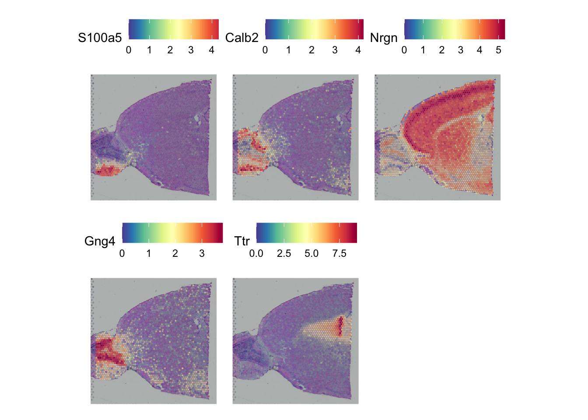
Subset cortex anatomical region
Here we can do so by selecting specific clusters that correspond to this anatomical region
cortex <- subset(brain_mtfilt, idents = c(1, 2, 3, 4, 6))
SpatialDimPlot(cortex, crop = TRUE, label = TRUE)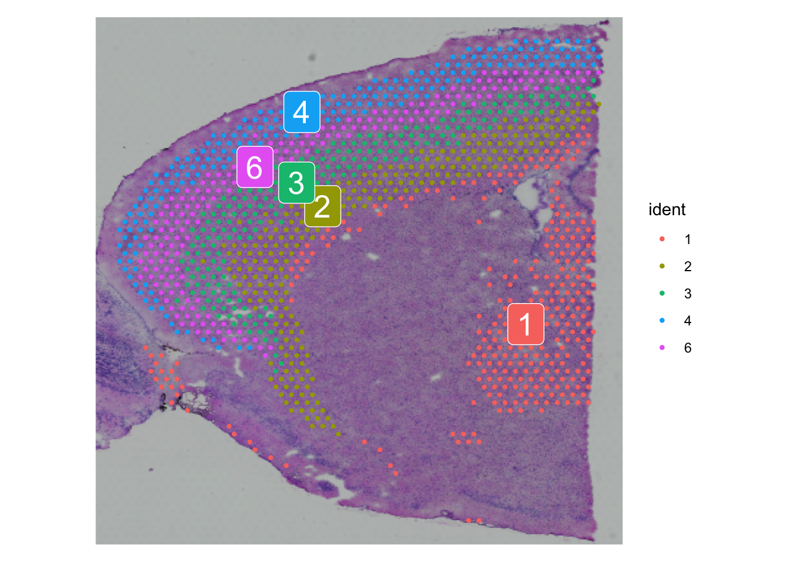
After subsetting we should renormalize cortex spatial data
cortex <- SCTransform(cortex, assay = "Spatial", verbose = FALSE) %>%
RunPCA(verbose = FALSE) %>%
FindNeighbors(reduction = "pca", dims = 1:30) %>%
FindClusters(verbose = FALSE) %>%
RunUMAP(reduction = "pca", dims = 1:30)
Reductions(cortex)[1] "pca" "umap"p1 <- DimPlot(cortex, reduction = "umap", label = TRUE)
p2 <- SpatialDimPlot(cortex, label = TRUE, label.size = 3, pt.size.factor = 2.5)
p1 + p2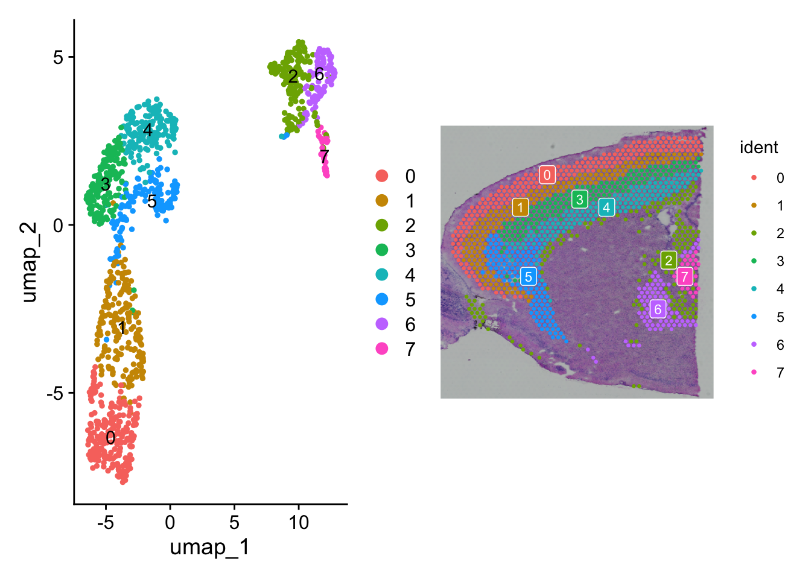
Annotation using with a scRNA-seq reference
We will use an algorithm called Robust Cell Type Decomposition to annotate cell types in the query STx dataset using labels from a reference scRNA-seq dataset
First, install RCTD and load it using library(spacexr) (skip if done ahead of time)
#if (!requireNamespace("spacexr", quietly = TRUE)) {
# devtools::install_github("dmcable/spacexr", build_vignettes = FALSE)
#}
### Note: I had issues installing until I took myself off NIH VPN. Might want to do the same if you encounter the same issue
#remotes::install_github("dmcable/RCTD")
library(spacexr)Download mouse cortex reference here. (skip if done ahead of time) This reference scRNAseq dataset has been reduced to 200,000 cells (and rare cell types fewer than 25 cells have been removed).
Load the mouse cortex reference as ref object:
#setwd("/Users/homc/Library/CloudStorage/OneDrive-NationalInstitutesofHealth/MHO_WORK/MyWorkshops/SpatialTranscriptomics/Seurat_tutorial/")
ref <- readRDS("allen_cortex.rds")
ref <- UpdateSeuratObject(ref)ref_counts <- ref[["RNA"]]$counts
ref_cluster <- as.factor(ref$subclass)
ref_nUMI <- ref$nCount_RNA
levels(ref_cluster) <- gsub("/", "-", levels(ref_cluster))Sketch the cortical subset of the Visium dataset, which downsamples the high-dimensional spatial RNA expression data, which can help with scalability for large datasets, to 10,000 cells
DefaultAssay(cortex) <- "Spatial"
cortex <- FindVariableFeatures(cortex)
cortex <- NormalizeData(cortex)
cortex <- ScaleData(cortex)
cortex <- SketchData(
object = cortex,
ncells = 10000,
method = "LeverageScore",
sketched.assay = "sketch"
)DefaultAssay(cortex) <- "sketch"
cortex <- FindVariableFeatures(cortex, assay="sketch")
cortex <- ScaleData(cortex, assay="sketch")
cortex <- RunPCA(cortex, assay = "sketch", reduction.name = "pca.cortex.sketch", verbose = T)
cortex <- FindNeighbors(cortex, reduction = "pca.cortex.sketch", dims = 1:50)
cortex <- RunUMAP(cortex, reduction = "pca.cortex.sketch", reduction.name = "umap.cortex.sketch", return.model = T, dims = 1:50, verbose = T)Create RCTD reference object
### make reference object from the ref scRNA-seq object
reference <- Reference(ref_counts, ref_cluster, ref_nUMI) Create the RCTD query object
### make query SpatialRNA object from the cortex Visium data
query_counts_hd <- cortex[["sketch"]]$counts
query_cells_hd <- colnames(cortex[["sketch"]])
query_coords <- GetTissueCoordinates(cortex)[query_cells_hd, 1:2]
query <- SpatialRNA(query_coords, query_counts_hd, colSums(query_counts_hd))# run RCTD on query and reference
RCTD <- create.RCTD(query, reference, max_cores = 28, CELL_MIN_INSTANCE=5)
Astro CR Endo L2-3 IT L4 L5 IT L5 PT
368 7 94 982 1401 880 544
L6 CT L6 IT L6b Lamp5 Macrophage Meis2 NP
960 1872 358 1122 51 45 362
Oligo Peri Pvalb Serpinf1 SMC Sncg Sst
91 32 1337 27 55 125 1741
Vip VLMC
1728 67 RCTD <- run.RCTD(RCTD, doublet_mode = "doublet")[1] "gather_results: finished 1000"# add results back to cortex Seurat object
cortex <- AddMetaData(cortex, metadata = RCTD@results$results_df)Project RCTD labels from sketched cortical cells to all cortical cells
cortex$first_type <- as.character(cortex$first_type)
cortex$first_type[is.na(cortex$first_type)] <- "Unknown"
cortex <- ProjectData(
object = cortex,
assay = "Spatial",
full.reduction = "pca",
sketched.assay = "sketch",
sketched.reduction = "pca.cortex.sketch",
umap.model = "umap.cortex.sketch",
dims = 1:50,
refdata = list(full_first_type = "first_type")
)#plot_all_cell_types(RCTD@results$results_df, coords, as.vector(cortex$first_type), resultsdir="/Users/homc/Library/CloudStorage/OneDrive-NationalInstitutesofHealth/MHO_WORK/MyWorkshops/SpatialTranscriptomics/Seurat_Visium_tutorial/out")DefaultAssay(brain_mtfilt) <- "Spatial"
# we only ran RCTD on the cortical cells
# set labels to all other cells as "Unknown"
brain_mtfilt[[]][, "full_first_type"] <- "Unknown"
brain_mtfilt$full_first_type[Cells(cortex)] <- cortex$full_first_type[Cells(cortex)]
Idents(brain_mtfilt) <- "full_first_type"Save Point 2
saveRDS(brain_mtfilt, file = "brain_mtfilt_sctransform_cortexannot.rds")
#brain_mtfilt <- readRDS("brain_mtfilt_sctransform_cortexannot.rds")Visualize excitatory interneuron layers
# now we can spatially map the location of any scRNA-seq cell type
# start with Layered (starts with L), excitatory neurons in the cortex
cells <- CellsByIdentities(brain_mtfilt)
excitatory_names <- sort(grep("^L.*", names(cells), value = TRUE))
SpatialDimPlot(brain_mtfilt, cells.highlight = cells[excitatory_names], cols.highlight = c("#FFFF00", "grey50"), facet.highlight = T, combine = T, ncol = 4)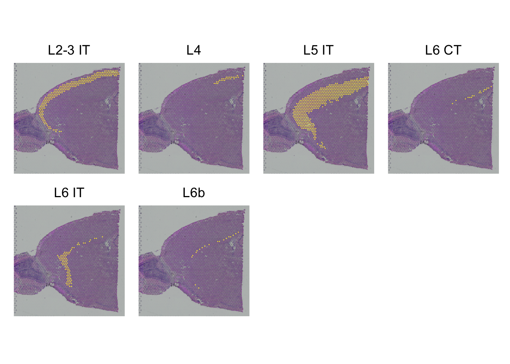
### Here we can visualize all the cells
#all_names<- names(cells)
#SpatialDimPlot(brain_mtfilt, cells.highlight = cells[all_names], cols.highlight = c("#FFFF00", "grey50"), facet.highlight = T, combine = F, ncol = 1)library(viridis)
brain_mtfilt_types <- as.data.frame(table(brain_mtfilt$full_first_type))
ggplot(brain_mtfilt_types, aes(x = Var1, y = Freq, fill=Var1)) +
geom_bar(stat = "identity") +
theme_minimal() +
labs(title = "Assigned Cell Type after RTCD", x = "Assigned Cell Type after RTCD", y = "Count") +
scale_fill_viridis(discrete=T, option="C")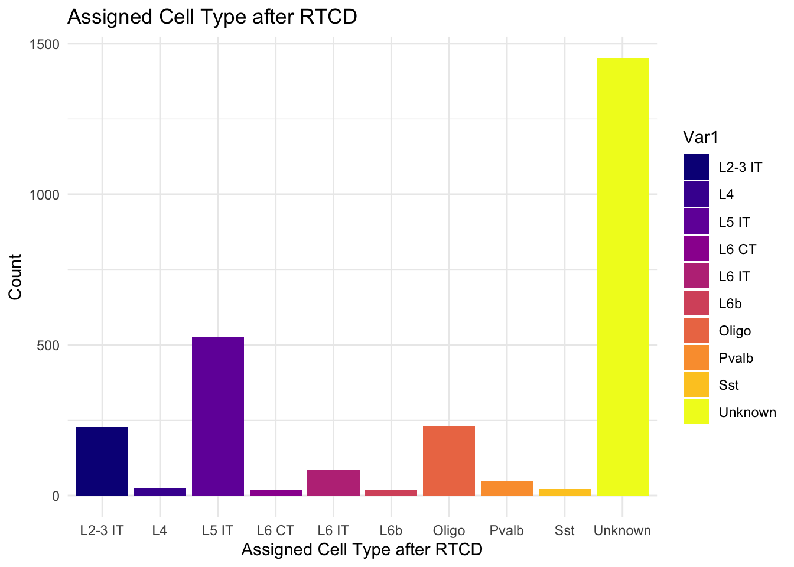
ImageDimPlot will allow us to see the annotated cell identities on a spatial map:
DefaultAssay(brain_mtfilt) <- "Spatial"
ImageDimPlot(brain_mtfilt, size=2, dark.background=FALSE, cols="polychrome") + theme_minimal() + theme(panel.grid.major = element_line(color = "grey80", linewidth = 0.5), # Major grid lines
panel.grid.minor = element_line(color = "grey90", linewidth = 0.25)) + # Minor grid lines +
scale_x_continuous(name = "X Coordinate") + # X-axis label
scale_y_continuous(name = "Y Coordinate") # Y-axis label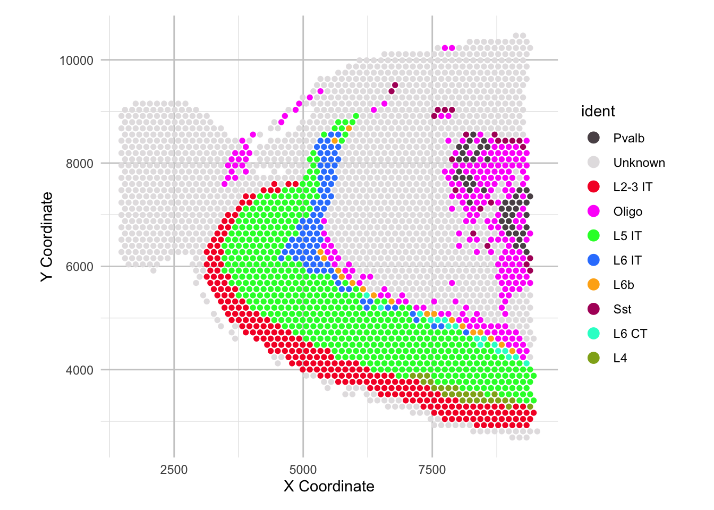